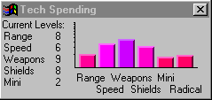

Jouer à Spaceward Ho!
La fenêtre des dépenses en technologie

Utilisez la fenêtre des dépenses en technologie pour montrer les technologies que vous voulez développer en priorité. Vous pouvez choisir de rechercher des technologies différentes selon votre stratégie, votre philosophie et la situation de la partie. La plupart du temps, vous n’avez pas besoin de trop vous occuper de cette fenêtre.
N’oubliez pas que la fenêtre des dépenses en technologie ne fait que répartir l’argent de la technologie, et ne décide pas de son montant : celui-ci se règle avec les barres de la fenêtre du budget.
Traduction française du remake, non officielle, du manuel de Delta Tao. La page en anglais (en anglais).